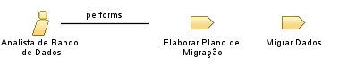

| Role: Analista de Banco de Dados |
 |
|
Relationships
 |
||
| Primary Performs | ||
|---|---|---|
| Additionally Performs | ||
| Modifies |
|
|
| Process Usage | ||
Main Description
| O Analista de Banco de Dados é o profissional responsável por auxiliar o Analista de Sistema nas atividades relacionadas à migração de dados, além de revisar as rotinas de migração desenvolvidas. Este papel está alocado na DS. |
Staffing
| Skills | Administração de Banco de Dados (DBA); SQL; Otimização de consultas; Planejamento de migração de dados; Revisão de scripts de migração; Segurança de dados. |
|---|